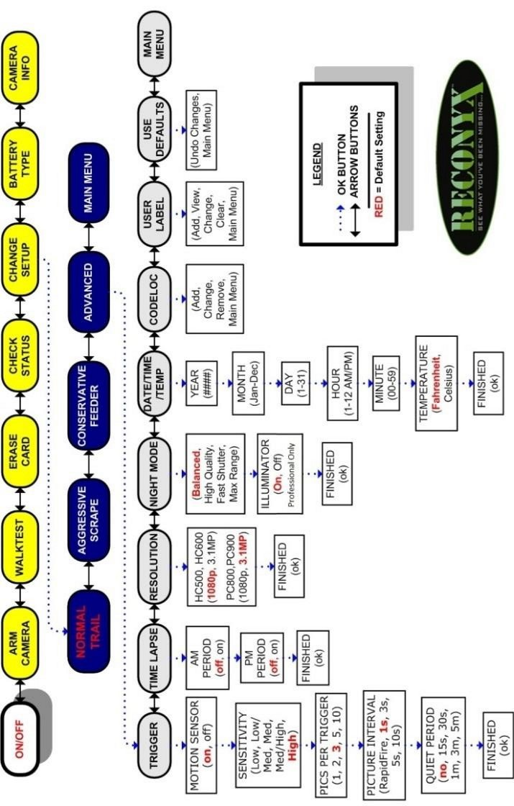

Camera settings#
Hint
See also
As mentioned in camera hardware options, it is important to distinguish between camera specifications (features) versus settings (user-defined options). Important settings often include Trigger Sensitivity (which may affect detection probability), Motion Image Interval and Quiet Period. The setting option selected may vary according to the Survey Objectives, modelling approach, Target Species, and use (or not) of attractants. Consideration of the camera settings is an important step when designing a survey and in the interpretation of the resulting images.
An example of the settings available in a Reconyx camera is included in Appendix A - Table A3.
7.2.1 Photos vs video
Some Camera Models allow the user to record video as well as photos. Videos typically use more memory on SD cards, drain camera batteries sooner and are more difficult to process (i.e., extract data) than images. Limiting the length of video taken when the camera is triggered (possible for most Camera Models) could help slow how quickly an SD card becomes full. Some Camera Models have hybrid settings, which lets you capture photos and videos for each animal detection.
It is generally recommended that cameras are set to capture images rather than videos unless the objective is related to monitoring animal behaviours, understanding group size and/or determining recruitment (e.g. calves per female), in which case continuous observation may be important. Video is also useful when individual identification is needed, such as for creating “marked” individuals for use in machine learning or computer vision (e.g., Schneider et al., 2019; Vidal et al., 2021).
By default, cameras are set to record images when an animal is detected by the motion and/or infrared detector(s).
7.2.2 Trigger Mode(s) - Time-lapse vs. motion detector
By default, remote cameras are triggered to take photos when the motion detector detects an animal. Many Camera Models allow you to set your camera in both time-lapse and default motion detector settings.
Time-lapse images are images taken at regular intervals (e.g., hourly or daily, on the hour), regardless of whether an animal is present or not. It is critical to take a minimum of one time-lapse image per day at a consistent time (e.g., 12:00 p.m. [noon]) to create a record of camera functionality or local environmental conditions (e.g., snow cover, plant growth, wildfire; Sun et al., 2021)
Time-lapse images may always be useful for modelling approaches that require estimation of the “viewshed“ (i.e., “viewshed density estimators,” such as REM or time-to-event (TTE) models; see Moeller et al., [2018] for advantages and disadvantages).
7.2.3 Trigger Sensitivity, Photos Per Trigger, Motion Image Interval and Quiet Period
The Trigger Sensitivity is camera setting responsible for how sensitive a camera is to activation (to “triggering”) via the infrared and/or heat detectors (if applicable, e.g., Reconyx HyperFire cameras have a choice between “Low,” “Low/Med,” “Med,” “Med/High,” “High,” “Very high” and “Unknown”). That is, how the camera is activated once the animal enters the detection zone. A high Trigger Sensitivity is ideal when estimating density or abundance using mark-recapture or occupancy modelling (Rovero et al., 2013). The more easily (and faster) the camera is triggered, the more likely it is to photograph approaching animals as they enter the area (Apps & McNutt, 2018). High Trigger Sensitivity (and fast Motion Image Intervals) are less necessary if attractants are present (Rovero et al., 2013). Refer to section 6.2 for examples of ideal Trigger Sensitivity settings to achieve certain Survey Objectives.
The camera user can also predefine the number of photos taken each time the camera is triggered (i.e., “Photos Per Trigger, e.g., 1, 2, 3, 5 or 10 photos). The user can specify the time interval between images (i.e., the “Motion Image Interval“) or the time interval between image sequences (i.e., the “Quiet Period“ or “time lag,” depending on the Camera Make and Camera Model). The Quiet Period differs from the Motion Image Interval in that the delay occurs between multi-image sequences rather than between the images contained within multi-image sequences (as in Motion Image Interval). Setting the camera to take continuous photos (i.e., the Quiet Period set to “no delay”) will fill the SD card with more photos per detection; however, it may provide important information for identifying individual animals, determining enter-leave times and regarding animal behaviours / interactions.
Generally, it is recommended to set the Trigger Sensitivity to “high,” Photos Per Trigger to “1” and the Quiet Period to “no delay” between consecutive triggers (Appendix A - Table A3).
This section will be available soon! In the meantime, check out the information in the other tabs!


figure1_caption


Check back in the future!
Type |
Name |
Note |
URL |
Reference |
|---|---|---|---|---|
Refs